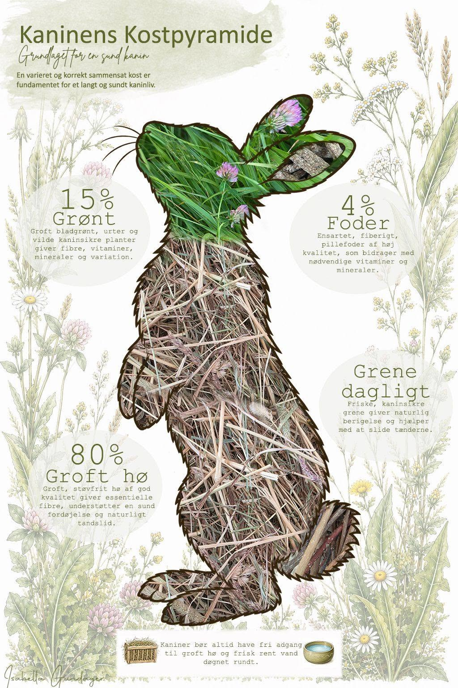

Kaninens kostpyramide
Hvad skal der egentlig i madskålen, høhækken og på grønttallerkenen?

Her får du et overblik over de forskellige dele af kaninens kost, hvorfor de er vigtige, og hvor meget din kanin cirka har brug for.
Procenterne i pyramiden er vejledende. Den enkelte kanins behov kan blandt andet variere med alder, størrelse, aktivitetsniveau, huld og helbred.
Hø og græs, ca. 80 %
Hø og græs bør udgøre langt størstedelen af kosten og være frit tilgængeligt døgnet rundt.
Det høje fiberindhold er vigtigt for fordøjelsen, og de mange timers tyggearbejde hjælper med at slide kaninens tænder naturligt. Kaniners tænder vokser nemlig hele livet.
Hø og græs handler heller ikke kun om ernæring. Kaniner bruger naturligt en stor del af deres tid på at spise og søge efter føde. Fri adgang til hø giver dem derfor mulighed for at bruge mange timer på netop det.
Vælg gerne et groft, støvfrit og velduftende hø med god struktur og forskellige græsarter. Frisk græs er også en rigtig god del af kosten, men hvis kaninen ikke er vant til det, bør det introduceres gradvist.
Grønt, ca. 15 %
Grønt kan bestå af bladgrønt, friske krydderurter og kaninsikre vilde planter.
Det kan for eksempel være forskellige typer kål, salat og krydderurter eller vilde planter som mælkebøtte, vejbred, skvalderkål og mange andre urter fra naturen.
Kål kan sagtens indgå i en varieret kaninkost. Som med andet nyt grønt bør kaninen vænnes gradvist til det, så fordøjelsen får tid til at tilpasse sig. Start med en lille mængde og øg langsomt.
Variation er en god idé frem for at servere det samme hver dag. Plukker du selv i naturen, skal du være sikker på artsbestemmelsen og vælge steder uden sprøjtemidler og anden forurening.
Foderpiller, ca. 4 %
Foderpiller er et supplement til den øvrige kost og skal derfor kun fylde en lille del.
Til en sund, voksen kanin kan man som udgangspunkt give omkring 5–15 g foderpiller pr. kg kropsvægt om dagen. En kanin på 2 kg vil altså typisk få omkring 10–30 g dagligt.
Mængden er vejledende og bør altid tilpasses den enkelte kanin. Alder, vægt, huld, aktivitetsniveau, helbred, leveforhold og resten af kosten spiller alle ind. Nogle voksne kaniner trives derfor med meget lidt foderpiller, mens andre har brug for mere.
Kaniner i vækst har et større behov for energi og næringsstoffer og kan derfor have brug for mere foder. Her bør mængden tilpasses kaninens alder, vækst og huld samt det konkrete juniorfoder.
Vælg et ensartet og fiberrigt pelleteret eller ekstruderet fuldfoder.
Grene, gerne dagligt
Friske, kaninsikre grene er både noget at spise og noget at beskæftige sig med. Kaninen kan gnave i barken, spise blade og friske skud og bruge tid på at undersøge og arbejde med grenene.
Æble, pære, hassel og elm er nogle af de arter, du kan tilbyde.
Når kaninen gnaver i grene og bark, bidrager det også til at slide tænderne. Grene kan dog ikke erstatte hø og græs, som kaninen bruger mange timer på at tygge, og som derfor spiller en vigtig rolle for det naturlige tandslid.
Og den sidste lille del?
Frugt og andre sukkerholdige fødevarer er ikke nødvendige i kaninens kost. De kan sagtens undværes, men kan også gives i små mængder som en godbid en gang imellem.
Frisk vand skal altid være frit tilgængeligt. Det står ikke i pyramiden som en procentdel, men er selvfølgelig helt grundlæggende for kaninens sundhed.
Hvis du vil nørde mere
Rabbit Welfare Association & Fund (RWAF). How to feed rabbits.
Harcourt-Brown, F. (2017). Reflections on rabbit diets. Journal of Small Animal Practice, 58(3), 123–124. DOI: 10.1111/jsap.12660
Harcourt-Brown, F. Rabbit Basic Science. I: Textbook of Rabbit Medicine.
Meredith, A.L. & Prebble, J.L. (2017). Impact of diet on faecal output and caecotroph consumption in rabbits. Journal of Small Animal Practice, 58(3), 139–145. DOI: 10.1111/jsap.12620